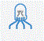
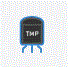

Vamos con el siguiente sensor
¿Te atreves con el sensor de temperatura?
Esta práctica las vas a realizar solito, es muy similar a la anterior. Vamos a usar el sensor de temperatura y el led RGB como actuador:
LED RGB

Sensor de Temperatura
..
¿Te ayudo un poco?
Vas a necesitar lo siguiente:
- Sensor de temperatura: conectarlo a voltaje, Tierra (GND) y entrada analógica A0
- Led RGD: conectarlo a Tierra y a las salidas digitales 9,11,10 para el rojo, verde y azul respectivamente
Y para programar:
- Haz, como en la práctica anterior, una primera parte para ver los datos que arroja el sensor de temperatura y ver los niveles en los que vais a encender las luces
- Cread una variable temperatura
¿Otro empujón?
Mira aquí